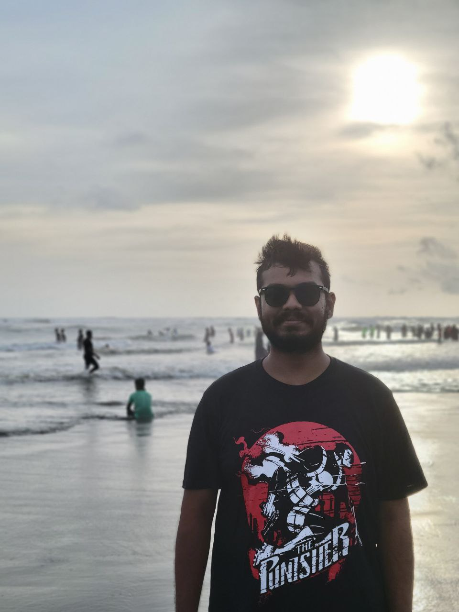
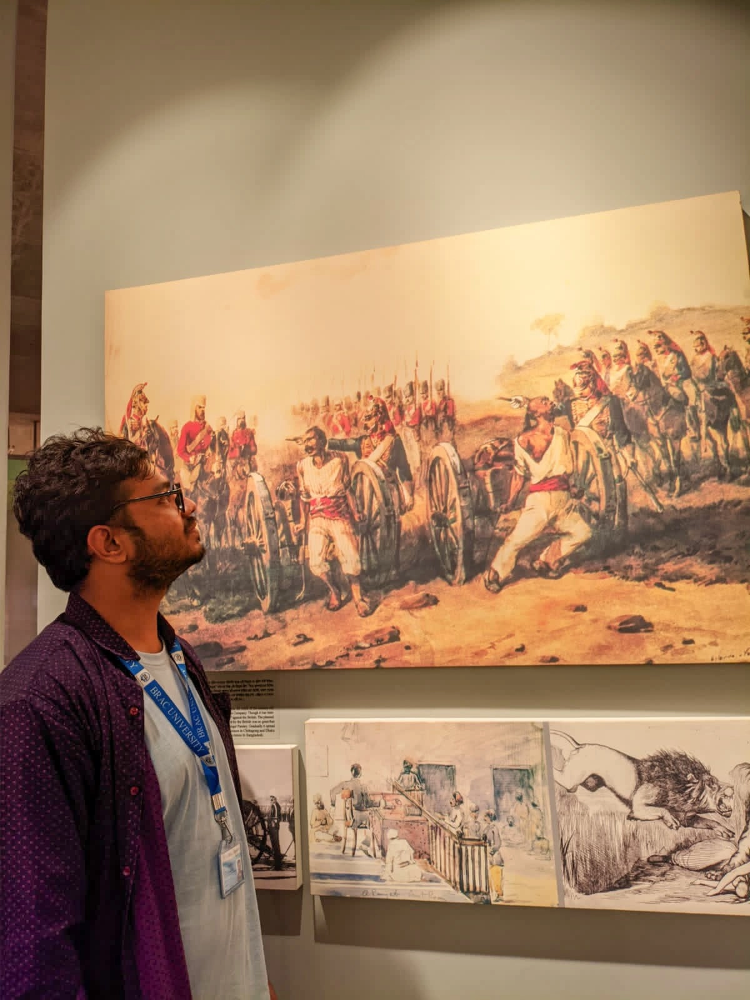

Tahmid Iqbal
Game developer. Curious human. Usually building something.
A little about me
I’m Tahmid Iqbal — Raven online — a game developer based in Dhaka and a Computer Science & Engineering graduate from BRAC University. I build optimized 2D/3D interactive experiences using Godot, Cocos Creator, and TypeScript, with additional work in Unity, LittleJS, and Flutter. I enjoy gameplay systems, expressive shaders, game feel, and the tools that make shipping a little easier. Game jams are where I get to experiment, collaborate, and turn a strange idea into something playable.



Away from code, I’m into books, music, keyboard modding, and hardware experiments. My book reviews live here too — not everything needs to be a project.
Education
BRAC University
B.Sc. in Computer Science & Engineering
CGPA: 3.26 | Fall 2021 – Summer 2025
Dhaka, Bangladesh
Dinajpur Government College
Higher Secondary Certificate (HSC)
GPA: 5.00 | 2020
Dinajpur, Bangladesh
Dinajpur Zilla School
Secondary School Certificate (SSC)
GPA: 5.00 | 2018
Dinajpur, Bangladesh
Where I’ve been building
Game Developer NOW
KreaTech
- Develop games using Godot.
- Work remotely with IDNERD STUDIO LTD, Hong Kong, through KreaTech.
Game Developer (including internship)
Revo Interactive Ltd.
- Developed & optimized 2D/3D playable advertising experiences using Cocos Creator, TypeScript, and PixiJS for Mintegral, Unity, and Adikteev.
- Added game feel, visual polish, gameplay progression, and state transitions across social casino, puzzle, farming, and monster-collection projects.
- Engineered a custom Squoosh Batch CLI (Bash) to compress bulk PNG/JPG assets, optimizing the asset pipeline.
- Built OneForAll CocosPackageAutomation tools to streamline cross-platform publishing.
Director of Press Release & Publications
BRAC University Computer Club (BUCC)
- Authored tech articles and improved formal writing in a corporate-like environment.
- Co-organized major campus events including IntraHacktive and AI Workshops.
Director of Publication
BRAC University Communication & Language Club (BUCLC)
- Transitioned from introvert to confident collaborator; built connections through team projects.
- Organized SPEAKATHON, Speak Bold, Cultural Exchange, and Vocal Verse.
An earlier adventure: RougeKnight

The toolbox
Game Engines
Godot (GDScript), Unity (C#), Cocos Creator (TypeScript), LittleJS, Defold, PixiJS
Languages
GDScript, TypeScript, JavaScript, C#, Python, C++, Dart, C, PHP, Lua
Frameworks & Libraries
Flutter, MERN/MEAN Stack, Django, ML/DL, React Native
Tools & Platforms
Git, Linux, MySQL, Blender, Aseprite, STM-F446RE, Arduino, Raspberry Pi 4
Learning along the way
Android Development
Angela Yu, Udemy
Machine Learning
Andrew Ng
Full-Stack JavaScript
The Odin Project
Duke of Edinburgh
International Award — Bronze Level
How I work
Team Collaboration · Problem-Solving · Time Management · Communication
Languages
Bangla
Native
English
Proficient
Japanese
Beginner
Outside the editor
Robotics
Enthusiast (Arduino & Raspberry Pi)
Music
Rabindra Sangeet & LOFI, Vocal Verse — BUCLC
Volunteer Work
BRACU 16th Convocation, TechConnect Career Fair
Hobbies
Keyboard Modding, Competitive Gaming, Reading, Music
Let’s connect
South Badda, Dhaka, Bangladesh